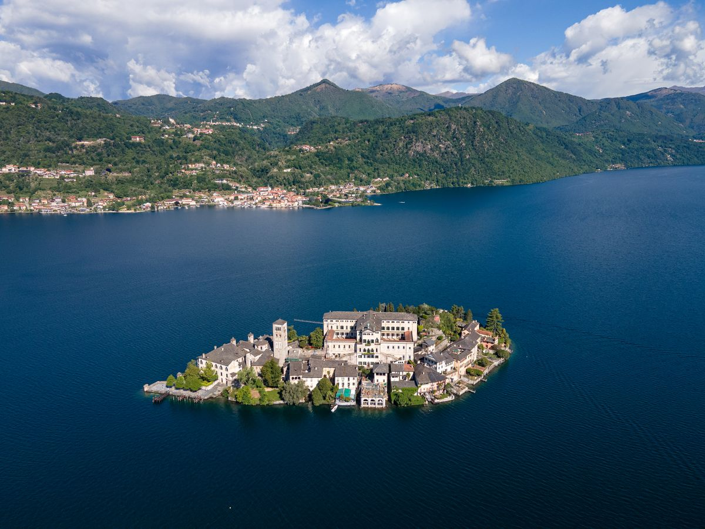

Wer seine erste Reise an die oberitalienischen Seen plant, hat fast sicher zuerst an den Comer See gedacht. Er hat die Villen, die Filme, die berühmten Anwohner. Der Ortasee, eine Stunde weiter westlich, hat davon nichts — und genau darum geht es. So sehen die beiden im direkten Vergleich aus, einschließlich der Fälle, in denen Como gewinnt.
Größe und Andrang: die Zahl, die alles erklärt
Der Comer See misst 146 Quadratkilometer und ist Italiens drittgrößter See. Der Ortasee misst 18,2. Como ist rund achtmal größer und verkraftet bis zu 1,4 Millionen Besucher im Jahr.
Dieser Druck ist längst ein lokalpolitisches Thema. Comos Bürgermeister hat eine Tagesgebühr nach Venezianer Vorbild ins Gespräch gebracht, und einzelne Uferorte verhängen Bußgelder für Touristen, die oberkörperfrei durch den Ort laufen. Nichts davon macht Como unangenehm — es heißt aber, dass Sie ihn im Juli und August mit vielen Menschen teilen und dass Fähren, Parkplätze und Restauranttische Planung brauchen.
Der Ortasee hat dieses Problem nicht. Auch in der Hochsaison bleibt das Ufer ruhig, und das Lauteste auf dem Wasser ist meist ein Ruderboot.
Atmosphäre: großartig gegen intim
Como ist theatralisch. Steile bewaldete Hänge fallen direkt ins tiefe Wasser, das Ufer ist von den großen Villen des 19. Jahrhunderts gesäumt, der Maßstab ist wirklich beeindruckend. Ein See, den man anschaut.
Orta ist in jeder Dimension kleiner und verhält sich anders. Vom eigenen Ufer sehen Sie das gegenüberliegende deutlich. Der Ortskern von Orta San Giulio ist autofrei, das Lauteste in den Gassen sind Schritte auf Stein. In der Mitte liegt die Insel San Giulio mit einem noch bewohnten Benediktinerinnenkloster, dessen „Weg der Stille" genau das ist, wonach er klingt. Ein See, an den man sich setzt.

Die Anreise
Como liegt näher an Mailand und ist besser angebunden — ein echter Vorteil, wenn Sie den See mit einem Städtetrip verbinden. Die Kehrseite: Die Uferstraßen am Comer See sind eng, viel befahren und langsam, besonders am Bellagio-Arm.
Orta erreichen Sie in unter einer Stunde ab Malpensa, und danach bleibt das Auto eine Woche lang stehen. Alle Details stehen in unserem Leitfaden zur Anreise zum Ortasee.
Sie müssen sich auch gar nicht ausschließlich entscheiden: Von Orta nach Como sind es rund 83 Kilometer, gut eine Stunde über die Autobahn. In Orta zu wohnen und einen Tag am Comer See zu verbringen, ist völlig vernünftig — und umgekehrt genauso.
Was es zu tun gibt
Como bietet mehr, schlicht weil er größer ist: Villa del Balbianello und Villa Carlotta, die Standseilbahn nach Brunate, Bellagio, ein richtiges Fährnetz und ein Nachtleben, das diesen Namen verdient.
Orta tauscht Menge gegen Dichte. Der Sacro Monte di Orta ist UNESCO-Welterbe, mit zwanzig freskierten Kapellen in einem Wald über dem Ort. Die Insel San Giulio füllt einen Vormittag. Villa Crespi, das Drei-Sterne-Restaurant von Antonino Cannavacciuolo, ist ein Reiseziel für sich. Dazu Wandern, Baden und Wassersport, ohne irgendetwas zu reservieren.

Was es kostet
Comos Beliebtheit steckt im Preis. Unterkunft, Restaurants und Bootsverleih kosten spürbar mehr, und im oberen Segment wird der Abstand größer. Am Ortasee reicht dasselbe Budget deutlich weiter: Ein Haus direkt am Wasser kostet hier so viel wie am Comer See ein Zimmer mit teilweisem Seeblick.

Wann Como die bessere Wahl ist
Wir tun nicht so, als wäre es anders. Nehmen Sie Como, wenn es Ihre erste Italienreise ist und Sie das Postkartenmotiv wollen; wenn Sie ohne Auto reisen und häufige öffentliche Verbindungen brauchen; wenn Sie die großen Villengärten sehen möchten; wenn Sie Bars wollen, die spät offen haben; oder wenn Sie den See mit Mailand verbinden und Transfers sparen wollen.
Wann Orta die bessere Wahl ist
Nehmen Sie Orta, wenn genau der Andrang das ist, dem Sie entkommen wollen; wenn Sie mit kleinen Kindern oder Hund reisen und Platz statt Logistik brauchen; wenn Sie lieber vor der eigenen Tür schwimmen als für eine Fähre anzustehen; wenn dasselbe Geld ein besseres Haus kaufen soll; oder wenn Sie Como schon kennen und ihn zwar schön, aber voll fanden.
Das Fazit
Como ist der berühmtere See und für eine erste Italienreise eine völlig vernünftige Wahl. Orta ist der, zu dem man zurückkommt. Wenn eine Woche am Wasser für Sie Ruhe, Platz und das Gefühl bedeutet, einen Ort gefunden statt erwartet zu haben, gewinnt der kleinere See — und Como bleibt eine Stunde entfernt, falls Sie es sich anders überlegen.
Neugierig, wie Orta gegen die anderen abschneidet? Dieselbe Übung haben wir für den Gardasee, den Lago Maggiore und den Iseosee gemacht.